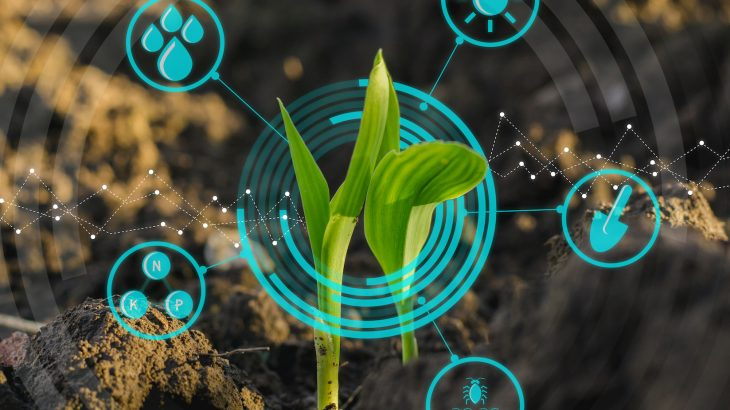
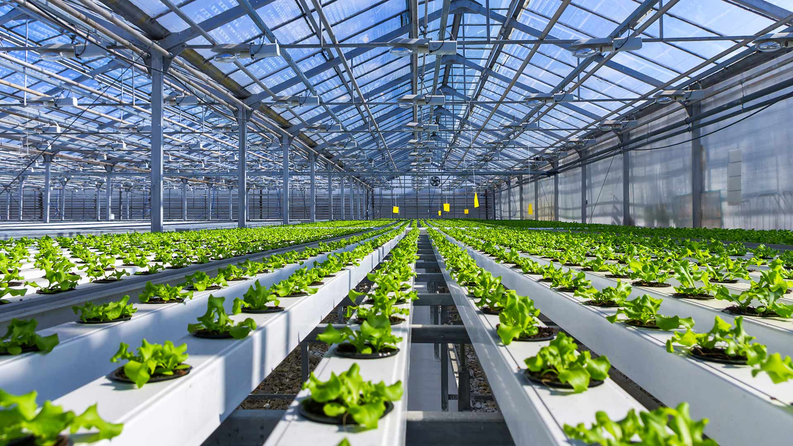

tech revolution in agriculture
Part 1: Promising Sub-Sectors Precision Ag-Tech The concept behind precision ag-tech is simple; as opposed to treating entire fields based on small samples of plant-status, innovative technology can be used to treat each sub-section of a field, or even each plant, according to its particular needs. This precise differential treatment can maximize yields while preventing unnecessary use of expensive agricultural inputs. Thus, for example, as opposed to treating an entire field for an infestation when infestation is noticed in one area, or failing to identify an infestation because it did not present in initial samples tested, sensors and cameras can be interspersed throughout a field, collecting granular data and, through IOT connectivity, trigger release of the necessary treatment in the precise areas that show signs of infestation. This automated precise treatment can also be applied to issues of disease, irrigation and various other components involved in the growing process. Through the collection of localized data and threat identification, treatment and care of crops can be precisely targeted so as to maximize yield while minimizing the use of extraneous agricultural inputs. Agricultural Big Data In agriculture, as in most other industries today, “big data” is attracting endless attention. In this sense, the IOT economy has begun to penetrate agriculture. It is not only cameras, sensors and drones used for precision ag-tech and weather satellites that are collecting relevant agronomic data; big farm machinery, like ploughs and tractors, are also beginning to collect huge amounts of information. Data about soil health, infestation and disease trends, weather patterns and yields is being collected by farmers, equipment manufacturers and public entities globally. Agricultural software companies are searching for ways to render the massive amounts of agriculturally relevant “big data” collected by smart machinery, satellites, drones and sensors into formats that are usable and actionable for farmers. Although some of the data may be privately owned, by equipment manufacturers or by farmers themselves, the trade and commercialization of data is less problematic in agriculture than it is in many other industries since agronomic data is currently less highly regulated insofar as it does not contain information about individuals. With relatively low barriers to entry and huge amounts of data available either free or to be purchased, data analytics presents a potentially significant opportunity for software developers looking to penetrate the world of ag-tech. Irrigation Technology Over the course of millennia, farmers have developed increasingly efficient methods for delivering water to their fields. The earliest farmers (and many contemporary farmers in certain regions) relied on rainwater. With rainwater proving unreliable, however, farmers developed various methods of irrigation to funnel water from more reliable water sources into their fields. While irrigation may have proved more reliable than rainwater in many regions, it is often highly inefficient in its water use. Water that is pumped into irrigation systems costs money and, in many regions of the world, is in limited supply. Furthermore, by some assessments agriculture accounts for approximately 70% of global freshwater usage, a very high percentage in a world where fresh-water supply is increasingly a topic of concern. As such, innovations in irrigation technology that can make water use more efficient are of high value for farmers and for global water systems, especially in arid regions. In the last few decades, the desert nation of Israel has developed a number of revolutionary technologies to drastically reduce farmers’ water costs. Perhaps most notably, the Israeli company Netafim introduced a revolutionary modern drip irrigation system in the 1960s, which uses tubes with small holes, implanted in fields, to release limited amounts of water directly into the soil where it is needed, maximizing the efficiency of water use. Drip irrigation technology has already revolutionized and will continue to revolutionize farming; it is being used everywhere from sophisticated IOT greenhouses to small farms in rural India and West Africa. Tremendous opportunities for innovation remain in the area of irrigation, from smart irrigation systems for vertical farms to efficient and affordable systems to be distributed across arid regions of the developing world, where water is expensive and in short supply. Other technologies to increase efficiency of water use, including cleaning sea and sewage water, also have the potential to provide tremendous value to farmers across the globe. Post-Harvest Solutions & Food Waste While much of the focus in agricultural technology is on increasing yields to meet rising demand, an additional track that may prove critical in ensuring robust global food supply is waste reduction. By most estimates at least 50% of food produced does not make it to human consumption and the vast majority of that 50% does not go to any productive use at all. Leaving a discussion on ethical considerations about waste aside for a moment, every kilogram of food that is lost represents, amongst other things, economic waste and uncaptured economic value. Preventing food loss not only has the capacity to respond to the growing demand for food but also prevents another potentially significant economic opportunity for businesses and technologies to capture what otherwise becomes lost economic value. Opportunities in the area of food waste exist across the supply chain, and the opportunities differ, as the primary causes of food waste vary, from region to region. In India, and many other parts of the developing world, with many smallholder, less technologically advanced, farms, 30 to 40% of food grown is lost between harvest and processing, succumbing to mould or infestation before it is sent to market. A large portion of this loss could be prevented through access to proper detoxification and storage facilities. Companies that can provide efficient and accessible solutions for preventing post-harvest losses will likely have considerable opportunities for growth across India, Africa and many other parts of the developing world. Protein Demand
So far this chapter has repeatedly discussed the increase of total demand for food as a catalyst for technological innovation. However it is not only a rise in demand for food but also a change in the composition of food being demanded that is catching the attention of entrepreneurs in the world of food technology. A growing middle class in China is showing an increasing preference for animal protein, drastically changing the country’s food demands. Disruptive technologies and know-how will be needed if this growing demand is to be met without causing a rapid increase in food prices and negative environmental impact. A particular space ripe for disruption is aquaculture. As natural fish stocks are depleted and regulations limiting fisheries become stricter, aquaculture, also known as fish farms, are being hailed by many as the path of the future. In its current state, however, aquaculture faces many challenges – including the need for sustainable and healthy fish-feed, prevention of disease and bacteria in inland fish-farms, and the prevention of damage and ocean pollution in offshore fish-farms. Solutions that can contribute to the construction of safe and healthy fish farms will find themselves in high global demand, especially in China which is expected to account for almost 40% of global seafood consumption by 2030. At the same time as growing middle classes in Asia are causing higher demand for animal protein, affluent western consumers are starting to demand alternatives to animal protein. As issues of sustainability, health and animal welfare become increasingly relevant to consumer choices, new ventures are cropping up offering innovative solutions to target self-styled socially and environmentally conscious consumers. Companies offering plant-based protein alternatives, cultured (lab-produced) meat, and insect protein are beginning to attract attention from investors. Although many of these companies have not yet successfully scaled their technology, many are hailing alternative protein sources as the wave of the future. Summary of Part 1 The above is by no means a comprehensive overview of all the emerging trends in ag-tech and food technology. Rather, it merely illustrates some of the exciting and promising spaces for new ventures in these areas. The field contains many other subsectors with opportunities for technological disruption; digital marketplaces are arising to replace traditional middle-men like grain elevators, alternative animal feed products are emerging to replace the current reliance on corn and soy, and the rising demand for organic produce is leading to the development of alternatives to agricultural chemicals. Having discussed some of the different opportunities available in the space, the next section will briefly discuss one of the primary challenges faced by start-ups in the sector – attracting initial investors. Part 2: Funding While raising capital is a challenge for any early-stage technology venture, agricultural entrepreneurs often face particular challenges. Ag-tech start-ups can take a long time to achieve “proof of concept” because their technology must be tested over the course of growing cycles, which occur over extended periods of time and often cannot be artificially accelerated. Furthermore, due to the low margins in the industry and the traditionalist mindset of many participants, farmers do not tend to be early adopters of new technology. As such, even once “proof of concept,” and any required regulatory approvals, have been achieved, growth and market penetration is often slow and laborious (the ag-tech world is yet to see its first “unicorn”). Although there are a number of venture capital funds dedicated to agricultural technology, and new entrants continue to emerge, ag-tech companies may face significant hurdles in meeting the criteria of traditional venture capital funds, which tend to seek out rapid-growth companies. Ag-tech ventures should be calculated and thoughtful in the narrative they offer to potential investors. If seeking out venture capital money, a venture must get to know an investor’s needs and interests before a pitch. It is important to understand the fund’s investment horizon and the return being sought. In approaching a VC fund, ag-tech ventures must have a clear conception of their technology’s value proposition, how they will achieve rapid market penetration and growth, and where the exit opportunities lie. A venture may determine that traditional venture capital is not the most promising address from which to seek funding. If that is the case, other addresses do exist. Most notably, strategic investors are playing a growing role in the food and ag-tech space. Many of the giants, like Monsanto, Syngenta and Cargill in agriculture and Tyson Foods, Coca Cola and General Mills in consumer packaged goods, are developing their own venture investment arms. These corporate venture arms often pursue different strategies than pure venture capital funds, including looking for synergies with their parents’ existing businesses and outsourcing R&D. Often these corporate investors are amassing portfolio companies with a view towards an eventual purchase. As such, the considerations of a corporate venture fund are usually different from those of a traditional venture capital fund. From the venture’s perspective, strategic investors don’t only provide capital; they often also provide expertise and relationships to facilitate the venture’s concretization of a product and market penetration. The added value of strategic investors is magnified for companies interested in penetrating the massive and often unfamiliar markets of China and India. Penetrating these markets can be challenging for foreign companies without a local presence and so local strategic investors not only provide the benefits discussed above but can also help a venture enter these lucrative markets. A new class of wealthy investors from Asia are eagerly scouting technology opportunities. These investors may prove to be especially fruitful partners for companies developing technology and products that are in high demand in the growing Asian markets. Part 3: Commercialization The last part of this chapter will offer a brief overview of different methods for commercialization and monetization. Food & agricultural technology companies, like all technology companies, will often own or control some form of intellectual property which is the basis of their core asset. There are many different models for the commercialization of intellectual property. Three of the most common models are discussed below: Distribution/Reseller Relationships One approach to commercializing technology is for the venture itself to produce the final product, and to engage a third parties to do the actual marketing and selling of the product. Thus, for example, a venture that has developed a post-harvest solution that can be used by Indian farmers to store freshly-harvested vegetables will likely have to find local Indian partners to actually sell the product to farmers. There are various ways in which the commercial terms of these distributor/reseller arrangements can be structured, including as revenue-sharing relationships or through a model that more closely resembles that of a wholesaler selling to a retailer. Due to the extensive local contacts a distributor/reseller must develop, these arrangements will often be limited to a particular territory in which the relationship will be exclusive and will, inter alia, restrict the parties from competing with each other. Before entering into such an arrangement, it is prudent to discuss the details of the agreement with qualified counsel to ensure it includes appropriate and reasonable mechanisms, including those to protect the venture if the distributor/reseller does not make adequate efforts or achieve adequate successes in distributing the venture’s products. OEM Arrangements OEM, which stands for “Original Equipment Manufacturer,” refers to an arrangement whereby one product is integrated into another. Thus, for example, a company that has developed a sensor to detect soil health may prefer to enter into an OEM arrangement with a drip irrigation company which will integrate the sensors into IOT irrigation tubes which will relay integrated data regarding water and soil health to its users, as opposed to selling the sensor on its own. As in distributor/reseller agreements, there are numerous ways in which the commercial terms of an OEM agreement can be structured, and ventures should discuss such arrangements with experts upon entering negotiations. Licensing Arrangements The last model to be discussed is that of “licensing.” A license is a form of “lease” to intellectual property or proprietary technology. Licenses are highly flexible, can be structured to offer a diverse scope of rights and can accommodate many different commercial models. For example, a start-up that has developed software for integrating agronomic data and presenting it in actionable form to partners may license its software to an equipment manufacturer like John Deere to install on a monitor on IOT farm equipment. The license will define into which equipment the software can be integrated, how it can be used, where it can be sold, whether the licensee can revise the software, and so on. License agreements can be complicated transactions and since they deal with a venture’s core IP assets it is highly advisable that properly experienced advisors and/or counsel be consulted.
